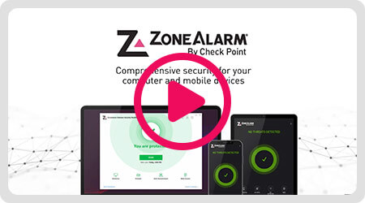

ZoneAlarm 装了快两年，从弹框烦到离不开的防火墙到底变了什么
从第一次启动对着三层安全区域发呆，到现在每天依赖 Threat Extraction 净化下载的文档，说说长期用 ZoneAlarm 的真实感受变化。
ZoneAlarm 装到现在快两年了，从 Pro 升到 Extreme 也过了一年半。当初选它没什么特别的理由——就是 Windows Defender 只管杀毒不管防火墙，ZoneAlarm 的官网上一看就觉得合适，找个能精细控制程序联网行为的东西就行。安装包是从官方下载拿的。现在回头看，当初的那个"随便装一个"的决定，让我对安全软件的认知被它悄悄地掰了好几次。
越用越顺手的：从弹框轰炸到 Auto 模式的默契
刚装 ZoneAlarm 那几天，差点把它卸了。每开一个新软件就弹一个框，问你允不允许联网——Chrome 第一次启动弹框，Steam 更新弹框，连 WinRAR 解压时要联网检查更新都弹框。那时候我直接切到 Ask 模式，以为"每个程序都问一遍总比静默放行安全"，结果第三天就受不了了，弹框多到把正常使用打断。
后来才弄明白 ZoneAlarm 的 Auto 模式不是偷懒。它有个内置的已知安全程序数据库，Chrome、Firefox、Outlook、Windows 系统进程这些都在里面，自动静默放行。只有不在数据库里的新程序才弹框——这才是正常的防火墙交互逻辑，不是每个程序都问。切回 Auto 模式后，弹框数量直接砍到几乎零。偶尔冒出来一个，一看是我刚装的小众软件或者破解工具，反而觉得 ZoneAlarm 在认真干活。
这个"只在该出声的时候出声"的分寸感，是我用下来最舒服的地方。不像有些安全软件天天在托盘区跳存在感，ZoneAlarm 安静的时候真的安静。
越用越烦的：那些当初没注意的小毛病
用久了问题才慢慢露出来。
第一个烦的是应用控制对小众软件的反复弹框。Auto 模式的已知安全数据库覆盖了主流软件，但我偶尔会用到一些国外的小众工具——开发者没知名度、下载量小，ZoneAlarm 数据库里没收录。第一次弹框我选了"允许"，它记住了；第二次还弹，第三次还弹。ZoneAlarm 的记忆机制有时候很固执，同一个程序同一个联网行为，它就是不肯把它加入白名单。我后来去zonealarm文档翻了一下才弄明白，好像是那个程序的签名证书有问题，ZoneAlarm 不信任它的签名就反复确认。理解归理解，实际体验就是烦。
第二个烦的是身份保险箱。当初买 Extreme 套件的时候觉得"送个密码管理器挺好"，用了三个月就放弃了。没有云端同步意味着只有这一台电脑能用——我手机上登网站还是得手动输密码，换了电脑就得导出导入。没有密码生成器，没有双因素认证，没有密码健康检查。对比 Bitwarden 的免费版，身份保险箱简直是个功能残缺的 demo。现在它就躺在托盘区角落里，我连主密码都快忘了。
第三个烦的是更新。ZoneAlarm 官方说杀毒引擎签名每小时更新、防火墙攻击特征实时推送，但我感觉它的更新机制有时候会卡住——有几次打开主界面发现签名库停在几天前，手动点"检查更新"才开始拉取。这个不是大问题，但每次看到都要手动戳一下，久而久之就觉得它不够"自动"。
每天离不开的：Threat Extraction 和三层区域划分
有两个功能是现在每天都在碰的。
第一个是 Threat Extraction——Extreme 独有的文档净化。我每天要收各种各样的 Word、Excel、PDF 附件，有些来自陌生邮件、有些来自客户。以前的习惯是下载前先扫一遍病毒，现在 ZoneAlarm 直接帮我做了。它不是简单地扫描文档里有没有恶意宏，而是主动把文档里所有可被攻击者利用的结构——宏脚本、OLE 嵌入对象、外部超链接——全部剥离，然后重建出一份干净的版本给我打开。原始可疑文档被隔离在后台，我根本碰不到。
这个功能用了一年多，没出过漏网的文档投毒攻击。朋友那边倒是发生过一次——用的是另一个安全软件，宏文档双击后触发了远程代码执行。对比之下，Threat Extraction 的主动剥离比传统杀毒的"等签名收录再拦截"靠谱得多。杀毒引擎要等恶意宏的签名被数据库收录才能识别，而 Threat Extraction 不管宏是不是已知威胁，只要是可执行结构就先剥掉。
第二个是三层安全区域划分。Trusted Zone、Internet Zone、Blocked Zone 这个设计，是 ZoneAlarm 和 Windows 自带防火墙最大的区别。我家里的路由器归 Trusted Zone、Medium 级别——能和同网段的 NAS、打印机正常通信，又不让局域网其他设备扫到我的端口。出门连公共 Wi-Fi 自动归 Internet Zone、High 级别——在公网上完全隐身，端口扫描收不到任何响应。上次出差住酒店，隔壁房间有人扫同 Wi-Fi 下的设备，ZoneAlarm 的攻击日志里清清楚楚记着扫描记录，但我电脑这边半点儿反应都没有。

时间修正的那些判断
当初装 ZoneAlarm 时做了三个判断，后来全变了。
第一个，当初觉得"Extreme 太贵了，Pro 就够"。Pro 有杀毒有沙箱，觉得够用了。后来遇到朋友那次宏文档攻击，加上自己下载的文档越来越多，才意识到 Threat Extraction 是真的有用——不是花架子。现在极端套件的授权是五设备两年，折合下来每台设备每年的成本其实没那么高，当初只看了单设备订阅价。
第二个，当初想"Trusted Zone 调到 High 更安全"。第一次启动向导里我差点就这么干了，还好 ZoneAlarm 弹窗警告说这样会断局域网共享。后来听朋友说他真这么干了，结果连不上家里的 NAS，折腾了半小时才找回来。Medium 级别已经足够抵御来自互联网和局域网的外部攻击了，High 只是让局域网通信也断掉——属于过度安全反而添乱。
第三个，当初以为身份保险箱是"免费的密码管理器"。三个月后我把它彻底抛弃，换回了 Bitwarden。功能差距不是一星半点，身份保险箱能做的事 Bitwarden 免费版全做了还做得更好，云端同步更是 ZoneAlarm 根本没有的东西。ZoneAlarm 的本地加密无云同步设计对隐私敏感用户可能有吸引力，但对大部分人来说，跨设备同步才是密码管理器的刚需。
什么时候该换了
短期应该不会换。Threat Extraction 和三层安全区域这两个核心功能，在同类产品里还没找到能替代的——Check Point 自家的反勒索和文档净化技术确实是它最强的护城河。如果哪天 Threat Extraction 失效了，或者 ZoneAlarm 的价格涨到离谱，那时候可能会考虑换。
但有一件事我已经在做准备了：身份保险箱的内容已经全部迁移到 Bitwarden，Extreme 到期后可能会回退到 Pro——或者干脆退回 Free 版防火墙加 Windows Defender 的组合，只保留 ZoneAlarm 的防火墙精细控制能力。毕竟 Free 版的三层区域划分和应用控制和付费版是一样的，真正让我付费的理由只有 Threat Extraction。
用了两年 ZoneAlarm，最大的感受是安全软件的"存在感"应该是反过来的——平时越安静越好，关键时刻越管用越好。ZoneAlarm 在关键时刻确实管用，但平时的小毛病也确实烦人。不过话说回来，有哪个安全软件是完美的呢？能用的就是好的。
ZoneAlarm 的资料在GitHub、Gitee、GitCode上都有同步——看文档、翻历史版本还是自己下载测试，哪个顺手就用哪个。